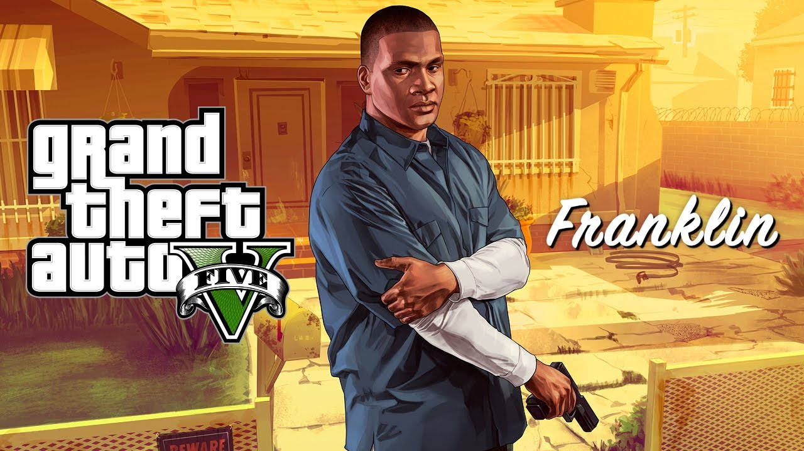
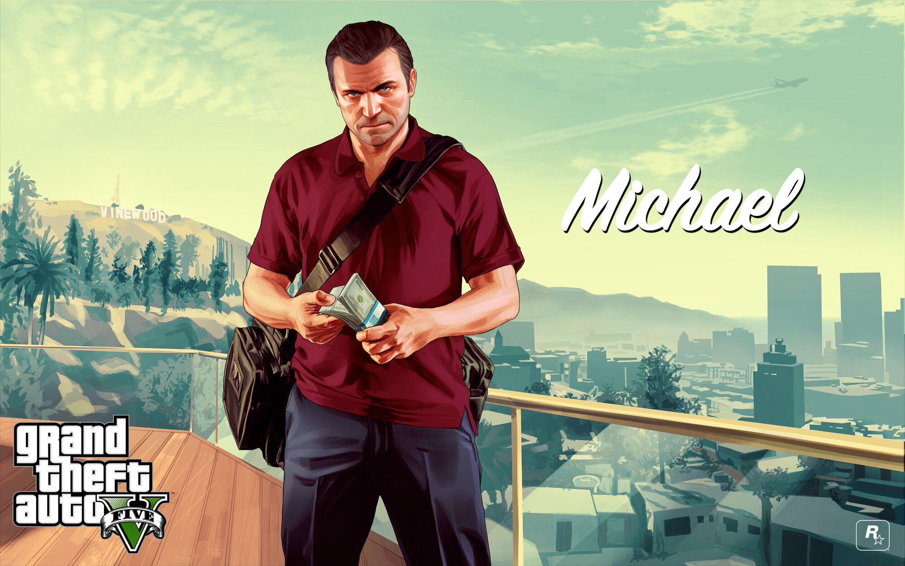
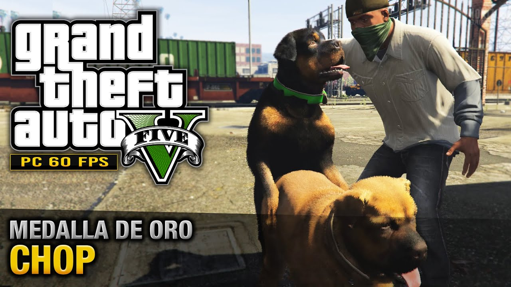
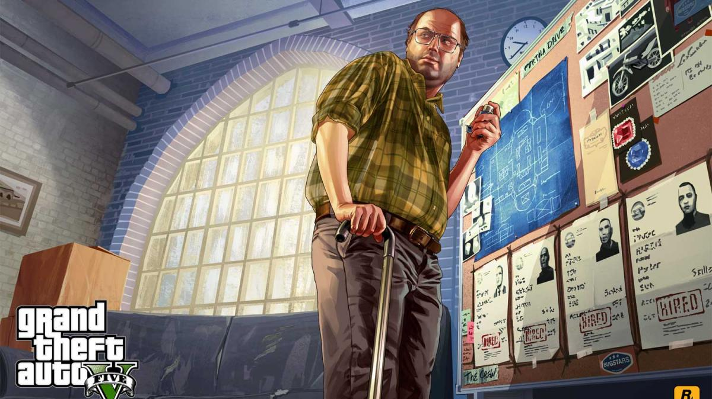

FRANKLIN
Franklin Clinton (1988 - ?) es uno de los tres protagonistas de Grand Theft Auto V. Es un joven ambicioso de 25 años (en la fecha de lanzamiento del juego-2013) que vivió en una pequeña casa en South Los Santos, junto a su tía Denise Clinton en el inicio del juego, y acabó viviendo en una mansión en Vinewood Hills. Trabajó para un vendedor de autos de lujo armenio llamado Simeon Yetarian. Él conoció a Michael De Santa mediante un embargo clandestino al vehículo a su hijo, Jimmy De Santa un BeeJay XL Amarillo chillón, quien le presentó después a Trevor Philips. Es uno de los miembros más importantes de los Families. Tiene un perro de mascota llamado Chop y un Buffalo S personalizado como vehículo. Franklin apareció por primera vez en el primer trailer de Grand Theft Auto V, junto a Michael, lanzado en noviembre de 2011.
MICHAEL
Michael De Santa (antes conocido como Michael Townley) (1965[1]/1968[2] - 2013[3]) es uno de los tres protagonistas de Grand Theft Auto V. Es un exitoso ex-ladrón de bancos de la costa este, actualmente retirado. Tiene aproximadamente 45 años. Él vive en su lujosa mansión con su esposa Amanda, con quien no se lleva muy bien, y sus hijos Tracey y James a quienes no entiende. Apareció por primera vez como el narrador del primer trailer de Grand Theft Auto V lanzado en noviembre de 2011.
CHOP
Chop (2009 - ?) es un perro de raza Rottweiler que aparece en Grand Theft Auto V. Aunque su dueño es Lamar Davis, después de la misión Chop, Franklin será el dueño del perro. Aparece por primera vez en la misión que lleva su nombre, y tras ella se le podrá encontrar en casa de Franklin. Chop puede ser manejado por el jugador en algunas misiones, principalmente con el objetivo de encontrar personas o lugares. Chop también puede ayudar al jugador a encontrar paquetes ocultos.
LESTER
Lester "Lest" Crest es un personaje de la saga Grand Theft Auto que hace su aparición en Grand Theft Auto V y Grand Theft Auto Online. Él es una de las mentes maestras detrás de los atracos orquestados por el jugador tanto en el modo historia como en el modo online, convirtiéndolo así en uno de los personajes más importantes en el desarrollo de estos dos. En Grand Theft Auto V, Lester operaba una empresa textil como tapadera pero tuvo que deshacerse de ella.